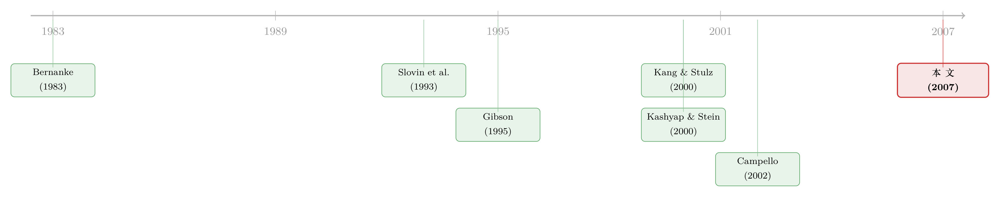

地价腰斩之后，是谁替企业按下了投资的暂停键
本文读的是 Gan (2007, Review of Financial Studies)：利用 1990–1993 年日本地价腰斩这场天然实验，作者把「银行不肯借」和「企业不想借」这两股几乎总是缠在一起的力量干净地拆开，证明了贷款渠道（lending channel）真实存在且分量不轻——震前房地产敞口更大的银行，震后被迫收缩放贷；而依赖这些银行的企业，投资和市值随之下滑。粗算下来，这条渠道解释了制造业信贷收缩的约三分之一、固定投资下滑的约五分之一、市值蒸发的约四分之一。
1 一个总也拆不开的结
先讲一个让所有研究信贷的人都头疼的场景。
经济下行，你打开数据，看到两件同时发生的事：银行的贷款在萎缩，企业的投资在下滑。一个自然的结论似乎是——银行没钱借了，企业借不到钱，于是只好放弃投资。这就是所谓的「贷款渠道」：资产价格下跌先砸伤银行，银行再把伤痛通过收贷传导给实体经济。
可是，慢着。还有一个同样说得通的故事：经济不好，企业本来就没什么好项目，对资金的需求自己就缩了；银行贷款少，不过是「没人来借」的被动结果。前一个故事里，银行是因；后一个故事里，企业是因，银行只是跟着需求走。
这两个故事在宏观数据上长得一模一样：贷款少了，投资少了。可它们的政策含义南辕北辙。如果是贷款渠道在起作用，那么救银行、补充银行资本就能托住实体经济；如果只是需求疲软，往银行里注资不过是把钱堆在那里空转。
这正是信贷研究里最经典的识别难题：如何把贷款供给冲击（loan supply shock）从同时发生的贷款需求冲击（loan demand shock）里剥离出来。用加总数据（aggregate data）做这件事，结论一直是混乱的——Bernanke (1983)、Peek and Rosengren (2000) 找到了显著的实际影响，而 Driscoll (2003)、Ashcraft (2006) 却找不到。
那么，真正关键的一步在于什么？在于找到一个只伤到银行、却与企业好坏无关的外生冲击，再用足够细的微观数据，把企业那一侧的需求彻底「锁死」。Gan (2007) 这篇论文，恰恰把这两件事都做到了。
2 为什么是日本，为什么是地价
故事的舞台，是 1990 年代初的日本。
1980 年代后半段，日本地价近乎翻了三倍。到 1990 年的顶点，按几种估算，全日本土地的市值是美国全部土地的 4 倍——而美国的国土面积是日本的 25 倍。这是一个何等夸张的泡沫。接着，从 1990 年 3 月到 1993 年底，地价几乎腰斩，跌掉了约一半。
这里有一个对识别至关重要的制度背景：日本的银行对土地市场的敞口极深。它们一方面大量放贷给房地产部门，另一方面自己直接持有土地。在 1989 年底（即冲击发生前的那一年），银行的房地产贷款平均占总资产的 6.4%（中位数 5.0%），而它们持有土地的市值平均占总资产的 7.9%（中位数 4.8%）。地价一旦腰斩，这些房地产贷款大面积变坏，银行手里的土地也直接缩水——资本被生生打掉一块。雪上加霜的是，1993 年巴塞尔协议（Basel Accord）开始收紧资本要求，在资本市场摩擦让银行无法增发股权的情况下，房地产上的损失就只能翻译成「可贷资金的减少」。
接着，一个自然的问题是：这跟「找外生冲击」有什么关系？
妙就妙在这里。地价腰斩，对任何一家单个银行来说，都是毫无疑问的外生事件——没有哪家银行能左右整个日本的地价。但银行受到的伤害是有差别的：谁震前在房地产上押得越重，谁就被砸得越狠。于是，银行震前的房地产敞口，就成了一把现成的尺子，度量出一场地震在每家银行财务健康上刻下的深浅——而这把尺子，与任何一家具体企业的经营好坏，几乎没有关系。
这是整篇论文的「阿基米德支点」：用震前的房地产敞口作为银行财务状况的外生代理变量。它的外生性来自两层——地价崩盘对单个银行外生；而房地产敞口本身事前并不是银行质量的信号，所以也不太可能是「坏企业专门去找差银行」这种内生选择的结果。
3 识别策略：同一家公司，向两家银行借钱
不过，光有一个外生的银行冲击还不够。
为什么？因为企业并不是被随机分配到银行的。Gan 自己举了个很尖锐的例子：假设那些「差」企业（投资机会少的）特意去找弱银行借钱，好躲开监督和管教；那么这些差企业和弱银行天生都更扛不住外部冲击。于是你会观察到「银行财务状况」和「企业表现」之间的一种相关——但这是伪相关，根源是银行—企业关系的内生选择（endogenous selection），而不是因果。
更一般地说，挑战在于：怎么控制住那些会影响贷款需求的、不可观测的企业特征？触发银行危机的同一波冲击，很可能也砸坏了企业的投资机会、压低了它们的借贷能力。如果「受冲击更重的企业」恰好被筛进了「房地产敞口更大的银行」，那一切相关都说明不了因果。
真正关键的一步，是 Gan 手里那份借贷配对数据（matched bank–firm loans）。
日本企业有一个独特的习惯：它们同时向很多家银行借钱。在 1984–1993 这十年里，日本企业平均向 16 家银行借款（中位数 14 家）。这意味着，同一家企业，会同时向房地产敞口高低不同的多家银行借钱。于是问题就可以被改写成一个极其干净的形式：
同一家公司，向两家银行借钱，那家房地产敞口更大的银行，是不是借给它的钱更少？
在回归框架里，这就转化为加入企业固定效应（firm fixed effects）。企业固定效应会吸收掉这家企业一切的、可观测和不可观测的需求差异——它的投资机会、它的信用质量、它被宏观冲击伤到了多深，统统被「差分」掉。剩下来的，只有「同一家企业面对不同银行」的那部分变异，而那部分变异，纯粹来自银行供给侧。论文的贷款层面（loan-level）模型写出来就是：
这里的下标 \(i\) 是银行、\(j\) 是企业，\(u_j\) 就是企业固定效应。被解释变量 \(Lending_{ij}\) 用的是长期贷款的对数增长率：企业 \(j\) 从银行 \(i\) 在 1994–1998 年的平均长期借款，除以同一家银行在震前 1984–1989 这五年的平均长期借款。聚焦长期贷款，是因为日本企业的固定投资主要靠长期贷款融资（Hibara, 2001）；用震前借款来归一化，则是为了把「过去的放贷决策」从「现在愿不愿意借」里剥离出来。
核心解释变量 \(REExposure_i\)（即 RE Exposure）由两个分量构成：一是银行 1989 年的房地产贷款占总资产比（% Real Estate Loans），二是银行 1989 年底持有土地的市值占总资产比（% Land Holding）。由于只有土地的账面值，作者沿用 Hayashi and Inoue (1991) 的永续盘存法（perpetual inventory method）把它换算成市值。核心系数（\(REExposure\) 前的系数）预期为负。
这里有一个常被忽视、却很要紧的好处：因为配对贷款数据允许「比较同一家企业在不同银行的借款变化」，所以 1990 年 11 月日本债券市场放开（企业转向发债、对银行贷款需求下降）这个令人担心的混淆因素，在贷款层面被自动控制掉了——它是企业层面的特征，已经被 \(u_j\) 吃干净。
4 数据与两套结果
数据来自一份配对的银行—企业借贷样本，银行财务数据用的是 NIKKEI NEEDS 数据库，企业则集中在制造业部门——一个关键的样本设计，因为制造业的信贷需求并未被地产冲击直接击中。
论文给出了两套层层递进的结果。
第一套，在贷款层面。 在用企业固定效应完全控制住借款人特征之后，作者发现：震前房地产敞口更大的银行，震后确实被迫收缩了放贷。这支持了贷款渠道的第一个假设——银行是受信贷约束的（credit-constrained），一个外生的流动性冲击会直接转化为放贷的减少。这个假设的理论根基来自 Stein (1998)：资本市场的信息不对称让银行无法增发无保险的债务或股权来弥补流动性短缺，于是冲击只能由「少放贷」来消化。
第二套，在企业层面。 日本工业企业平均从最大贷款人那里拿到约三分之一的贷款（即便那些有十家以上贷款人的企业，也把约 20–22% 的借款集中在最大那一家）。Gan 发现：企业最大贷款人的房地产敞口，负向影响了企业的固定投资和股票市场估值。这支持了贷款渠道的第二个假设——银行贷款是「特殊的」，银行关系是有价值的（关于银行为何愿意经营这种关系，可参见《银行为什么舍得先亏本拉客？》），当银行被迫收贷时，企业无法迅速找到替代融资，只能放弃本来有利可图的投资。
那么，这条渠道到底有多重要？这是全文最值得记住的几个数字：地产市场的冲击，解释了制造业信贷收缩的约三分之一、固定投资下滑的约五分之一、以及股市估值损失的约四分之一。这不是一个边角料般的效应，而是一个分量十足的宏观机制。
这两套结果合在一起，才第一次把贷款渠道的两个环节——「银行受约束 → 收贷」与「贷款特殊 → 企业受伤」——用大样本的微观证据同时钉死。在此之前，没有任何研究同时直接检验过这两个假设。
5 文献脉络
把这篇论文放回它所在的研究长河里，故事会更清楚。
最早的源头，是 Bernanke (1983) 用大萧条数据论证「金融体系的崩溃」本身就会拖累实体经济——这是「银行很重要」这一信念的奠基。沿着货币政策这条线，Bernanke and Blinder (1992)、Kashyap, Stein, and Wilcox (1993) 记录了货币紧缩期间银行贷款量的下降，并由此引出了「信贷渠道（credit channel）」的讨论（综述见 Bernanke and Gertler, 1995）。
但所有人都被同一个幽灵困扰：怎么把供给从需求里分出来？Kashyap and Stein (2000) 的破题之法，是论证流动性更充裕的（大）银行在货币紧缩时更不容易收贷；Campello (2002) 则进一步利用银行控股公司内部资本市场的差异来识别（这条「内部资本市场—货币政策」的暗线，在今天的研究里仍有回响，参见《央行降息，卡在了「那一个交易商」手里》）。
另一条平行的线，是「银行关系是否有价值」。Slovin, Sushka, and Polonchek (1993) 用大陆伊利诺伊银行（Continental Illinois）的事实倒闭，记录了对客户企业的显著负向财富效应；Gibson (1995) 和 Kang and Stulz (2000) 用日本企业样本，发现银行健康会影响企业投资与估值。但正如 Bae, Kang, and Lim (2002) 指出的，这些结果的解读受制于一点——银行关系本身与银行健康，未必对企业表现外生。Bae, Kang, and Lim (2002) 与 Ongena, Smith, and Michalsen (2003) 改用事件研究法（event study）去逼近因果，却得出了相反的结论（韩国显著为负，挪威只是短暂且微弱）。

Gan (2007) 正是站在这两条线的交汇处：它既不靠加总数据（那会陷入识别泥潭），也不靠事件研究（那只能看股价反应、看不到投资的实际变化），而是用一场外生的资产价格崩盘 + 一份配对借贷的微观数据，第一次把两个假设同时、直接地检验了一遍。值得一提的是，作者本人随后用同一片日本「试验田」继续深挖抵押品渠道（Gan, 2006）——同一场地震，被她拆出了不止一条传导路径。
6 评论与延伸（Q&A + 研究方向）
（a）几个可能的疑问
Q：为什么说「房地产敞口」是外生的？万一是质量差的银行才去押房地产呢？
作者的辩护分两层。第一，地价腰斩对单个银行是无可争议的外生事件，没有哪家银行能撼动全国地价。第二，房地产敞口事前并不是银行质量的信号——在地价还在涨的 1980 年代，重押房地产是赚钱的好生意，不是「烂银行」的标志。因此它不太可能是「坏企业专挑差银行」这种内生选择的产物。当然，这层论证不是铁板钉钉，见下一问。
Q：企业固定效应真的能把需求完全控制住吗？
在贷款层面，这是这篇论文最硬的一招。同一家企业向多家银行借钱，企业固定效应吸收掉它所有层面的需求差异，剩下的只有「同一企业面对不同银行」的供给侧变异。这一招也顺手解决了 1990 年债市放开的混淆。但它有一个边界：固定效应识别的是相对效应（同一企业内、银行之间的差异），它无法说银行普遍收贷对该企业的总融资有多大影响——那要靠企业层面的回归，而企业层面就回不到「完美控制需求」的干净状态了。
Q：企业层面的结果，会不会其实是「冲击同时砸坏了企业」造成的？
这正是企业层面相对脆弱的地方。贷款层面靠固定效应控住了需求，但企业层面比较的是「最大贷款人敞口高 vs. 低」的不同企业，需求侧的控制只能靠可观测变量。作者用了债市准入等控制，并论证地产冲击不直接打击制造业需求，但「最大贷款人敞口」与企业自身受冲击程度之间是否完全正交，仍需读者保留一分警惕。
Q：为什么盯着长期贷款，而不是全部贷款？
因为在日本，长期贷款主要对应固定投资的融资（Hibara, 2001），而本文关心的正是贷款渠道如何传导到实体投资。用全部贷款会混入短期周转性融资，噪声更大、与投资的对应更弱。
Q：用「实际借到的钱」来度量「可获得的信贷」，靠谱吗？
这隐含假设「用了多少债 = 能借到多少信贷」。作者认为在当时的情境下可辩护：地价崩盘后银行被坏账压着必须收紧，借款人这边因抵押品（多数日本贷款以土地为抵押）缩水也借不动了，所以观察到的借款量更多反映供给约束。再用震前借款归一化，进一步剥离掉「历史放贷决策」的存量影响。
Q：这跟「僵尸贷款」那套日本故事矛盾吗？
不矛盾，甚至互补。Peek and Rosengren (2005) 那条「逆向选择」的线讲的是弱银行为掩盖坏账、把信贷错配给僵尸企业（关于续贷如何被锁进一个均衡，可参见《欠你一千万的人，其实是债主的「人质」》）。本文讲的是健康受损的银行被迫收贷、伤及好企业。两者描述的是同一场危机里不同力量的不同侧面：一个讲「钱被错配给了谁」，一个讲「钱从谁手里被抽走了」。
（b）几个可能的研究问题与提案
1. 把「最大贷款人敞口」搬到公司债市场。 【经济故事】本文聚焦贷款，但当主银行收贷时，有债市准入的企业可以转向发债——这条替代渠道在论文里被假设为「事前不明朗」。一个自然的延伸：用今天美国/欧洲的配对银企数据，检验当主要贷款行受冲击时，企业的公司债发行、利差、期限结构如何反应，量化债市究竟是「安全垫」还是「在寒冬里同样冻住的备胎」。 【可行性】中。需要 DealScan（银团贷款）+ Mergent FISD（公司债）+ Compustat 配对；识别可借用银行的某类外生敞口冲击（如商业地产、能源）。难点在于找到与日本地价同样干净的外生冲击。
2. 外资银行 vs. 本土银行的传导差异。 【经济故事】当本土银行因本地资产价格崩盘而收贷时，在本地有分支的外资银行可能因母行资产负债表独立而成为「逆向接盘人」，也可能因总部去杠杆而一起撤退。哪种力量占上风，决定了开放资本市场是放大还是缓冲了贷款渠道。 【可行性】中。需要带银行国别标识的配对借贷数据（如部分新兴市场的信贷登记）。识别可用「母国冲击」对在地外资行的外生影响。
3. 抵押品渠道与贷款渠道的相对贡献。 【经济故事】地价崩盘同时通过两条路打击企业：银行端（本文的贷款渠道）和借款人端（抵押品价值缩水，即 Gan 2006 的抵押品渠道）。一个尚未被完全回答的问题是：在同一场冲击里，这两条渠道各自贡献了多少？把两者放进同一个框架里「赛跑」，对理解资产价格的实体效应很有价值（关于抵押品价值不确定性如何独立地收紧信贷，可参见《房子越「难定价」，越借不到钱》）。 【可行性】中偏高。日本数据已被作者本人开发；难点是同时分离两条渠道需要在企业和银行两侧都有外生变异。
4. 贷款渠道的长期实体后果。 【经济故事】本文看的是 1994–1998 的投资与市值。但被主银行收贷的企业，五年、十年后是更脆弱、更小，还是被竞争对手吃掉了市场份额？把贷款渠道接到「行业层面的资源再配置」上，能回答「金融冲击是否会永久改写产业版图」（这条思路与《钱配错了地方，就成了「全要素生产率」的缺口》相呼应）。 【可行性】高。日本企业的长面板数据可得，只需把因变量延伸到就业、市场份额、退出等长期结果。
7 我的判断
先说贡献。这篇论文的价值，不在于「发现」了贷款渠道——这个概念早已存在——而在于它把一个总也拆不开的识别难题，用一次干净到近乎奢侈的天然实验拆开了。它最漂亮的一步，是「同一家企业、多家银行 + 企业固定效应」的设计：当你能在同一企业内部比较不同银行的放贷行为时，需求侧的所有幽灵都被一次性驱散。再加上它同时检验了贷款渠道的两个环节，并给出了「三分之一信贷收缩、五分之一投资、四分之一市值」这样有分量的经济量级，这篇文章理应成为后来所有银企配对研究的范本之一。
再说担忧。最硬的识别在贷款层面，企业层面则相对脆弱——「最大贷款人敞口」与企业自身受冲击程度的正交性，终究是个需要信任而非证明的假设。其次，本文识别的是相对效应；要把它放大成宏观加总的「三分之一、五分之一、四分之一」，中间需要一系列外推假设，这些份额应被理解为有依据的估算，而非精确的会计。此外，由于正文在方法论一节即被截断，本文未能逐一核对回归表中的具体系数与 t 值——我引用的量级均来自摘要与正文明确陈述的部分，建议读者回到原文表格核实点估计。
最后说我想看到的。我最希望看到的，是把贷款渠道与抵押品渠道放进同一个赛道：同一场地震，到底是「银行被打伤、收了企业的贷」更重要，还是「企业抵押品缩水、借不动了」更重要？这两条渠道的相对权重，直接关系到危机时该救银行、还是该救借款人。Gan 用同一片日本试验田已经把两条渠道分别挖了出来，把它们合在一张表里对决，会是这条研究脉络下一个真正有张力的问题。
参考文献
- Ashcraft, A. (2006). New Evidence on the Lending Channel. Journal of Money, Credit and Banking 38, 751–775.
- Bae, K. H., Kang, J. K., and Lim, C. W. (2002). The Value of Durable Bank Relationships: Evidence from Korean Banking Shocks. Journal of Financial Economics 64, 181–214.
- Bernanke, B. S. (1983). Nonmonetary Effects of the Financial Crisis in the Propagation of the Great Depression. American Economic Review 73, 257–276.
- Bernanke, B. S., and Blinder, A. S. (1992). Money, Credit and Aggregate Demand. American Economic Review 82, 901–921.
- Bernanke, B. S., and Gertler, M. (1995). Inside the Black Box: The Credit Channel of Monetary Policy Transmission. Journal of Economic Perspectives 9, 27–48.
- Campello, M. (2002). Internal Capital Markets in Financial Conglomerates: Evidence from Small Bank Responses to Monetary Policy. Journal of Finance 57, 2773–2805.
- Gan, J. (2006). Collateral, Debt Capacity, and Corporate Investment: Evidence from a Natural Experiment. Journal of Financial Economics 85, 709–734.
- Gibson, M. (1995). Can Bank Health Affect Investment? Evidence from Japan. Journal of Business 68, 281–308.
- Hayashi, F., and Inoue, T. (1991). The Relation Between Firm Growth and Q with Multiple Capital Goods: Theory and Evidence from Panel Data on Japanese Firms. Econometrica 59, 731–753.
- Kang, J., and Stulz, R. (2000). Do Banking Shocks Affect Borrowing Firm Performance? An Analysis of the Japanese Experience. Journal of Business 73, 1–23.
- Kashyap, A., and Stein, J. C. (2000). What Do a Million Observations on Banks Say About the Transmission of Monetary Policy? American Economic Review 90, 407–428.
- Kashyap, A., Stein, J. C., and Wilcox, D. (1993). Monetary Policy and Credit Conditions: Evidence from the Composition of External Finance. American Economic Review 83, 78–98.
- Ongena, S., Smith, D., and Michalsen, D. (2003). Firms and Their Distressed Banks: Lessons from the Norwegian Banking Crisis. Journal of Financial Economics 67, 81–111.
- Peek, J., and Rosengren, E. (2000). Collateral Damage: Effects of the Japanese Bank Crisis on Real Activity in the United States. American Economic Review 90, 30–45.
- Peek, J., and Rosengren, E. (2005). Unnatural Selection: Perverse Incentives and the Misallocation of Credit in Japan. American Economic Review 95, 1144–1166.
- Slovin, M., Sushka, M., and Polonchek, J. (1993). The Value of Bank Durability: Borrowers as Bank Stakeholders. Journal of Finance 48, 289–302.
- Stein, J. C. (1998). An Adverse-Selection Model of Bank Asset and Liability Management with Implications for the Transmission of Monetary Policy. RAND Journal of Economics 29, 466–486.